服务发现技术是如何演进出来的？原文出处:本文由博客园博主张飞洪[厦门]提供。
原文连接:https://www.cnblogs.com/jackyfei/p/12078420.html
昨天写了一篇<微服务的时间和成本去哪儿了>，有人在底下留言：
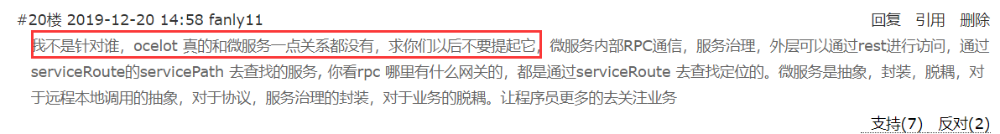
我的回答是：
"微服务可以不用服务发现和负载均衡吗？它是微服务一个核心组件。怎么能说没有关系？"
我觉得有必要来思考和总结一下服务发现技术是如何演进的。于是周末一通阅读和消化，希望能掰开揉碎在这里讲一下服务发现技术的演进历史。
催生的背景
为了提升研发效能，赋能业务规模化创新。不管是一线互联网企业还是传统互联网企业，将单块架构解耦成微服务架构，已经成为企业目前数字化转型的一个大趋势。
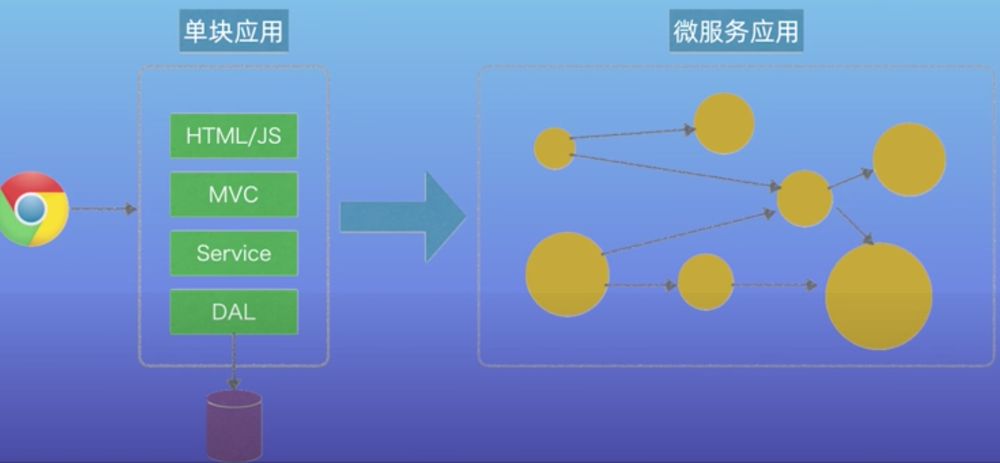
微服务架构下的服务少则几个，几十个，多则上百个，每个服务一般都以集群HA的方式进行部署。
这个时候就出现了两个问题：
- 一个是服务发现，也就是服务的消费方Consumer如何找到服务的提供方Provider。
- 另外一个是负载均衡，服务消费方如何以负载策略去访问服务当中的服务提供方的实例。
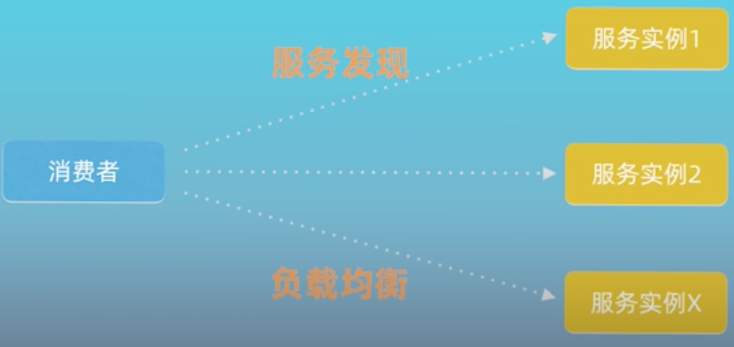
通用解决思路~代理(proxy)
在服务发现演进过程中，先后出现了三代服务发现解决方案。这三代的核心都是代理，只不过代理在架构中出现的位置是不同的。通过在消费方和提供方中间增加一层代理，由代理来处理服务发现和负载均衡等功能，消费方通过代理间接去访问服务实例。
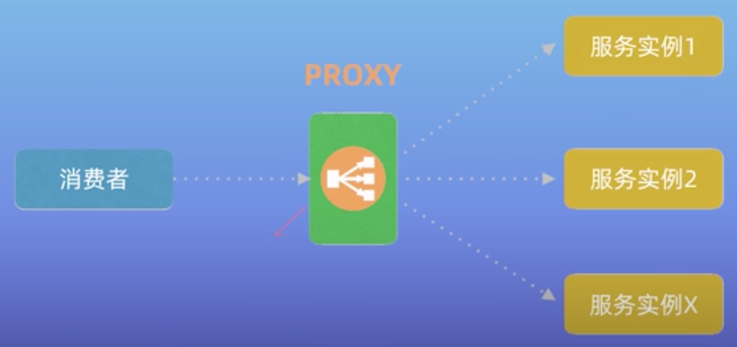
三代服务发现方案
第一代：传统集中式代理
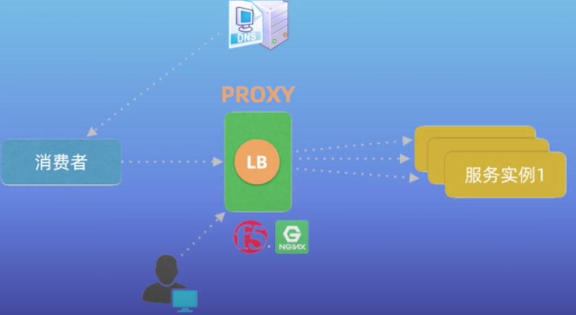
- 该方案比较简单，在消费和提供方中间部署一层代理服务。
- 常用的集中制代理有硬件负载均衡器，比如F5/A10；或者软件的负载均衡器，比如Nginx，HAPROXY。也可以是软硬结合，比如前面是F5，后面是Nginx，这种方法兼顾了配置的灵活性，因为Ngix比F5更容易配置。
- 这种配置需要引入DNS服务域名进行配合，每个服务都要申请注册域名，并且每个域名都要在代理上配置域名和服务IP的映射关系。
- DNS和代理的配置一般由运维人员手工完成。
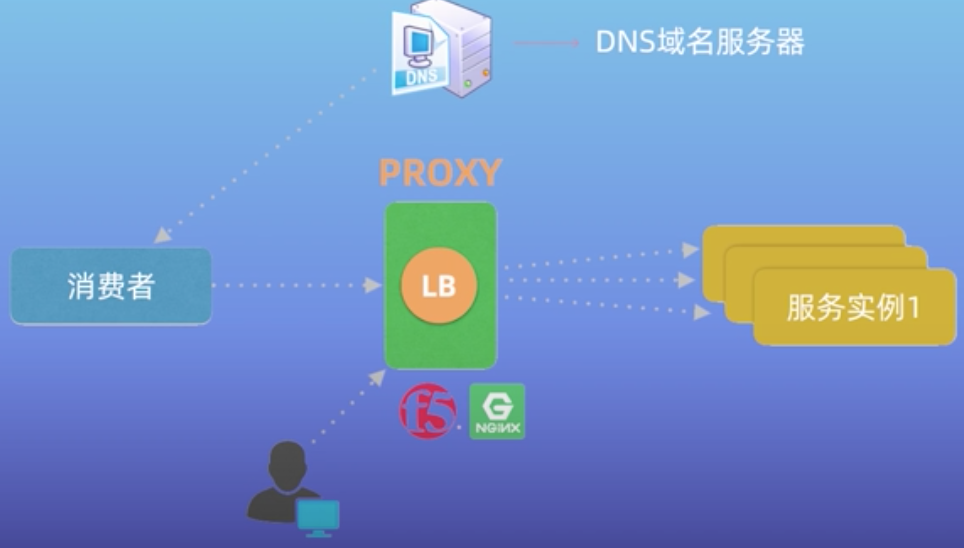
- 国内外的公司采用这种方式的有ebay，携程，拍拍贷。
- 缺点是手工配置，效率不高也缺乏灵活性，对开发人员不友好。
第二代：客户端嵌入式代理
随着微服务和云技术的兴起，企业对服务发现的效率和灵活性提出了更高的要求，于是出现了第二代方案。
- 该方案将服务发现和负载均衡以客户库Library的形式嵌入到应用或服务程序中。
- 该方案需要独立的服务注册中心配合，服务启动的时候将服务自动注册到中心，并且定期的报心跳进行保活。客户端通过服务注册中心发现服务的ip列表，通过某种负载均衡策略选择某个服务进行调用，这种对开发人员比较友好，可以做到开发自助，不需要太多的运维介入。
这种做法也是很多互联网公司的一个主流，相应的开源也很多。比如：
- eureka就是一个注册中心，配套ribbon客户端代理。
- dubbo和近期开源的nacos
- consul+ribbon
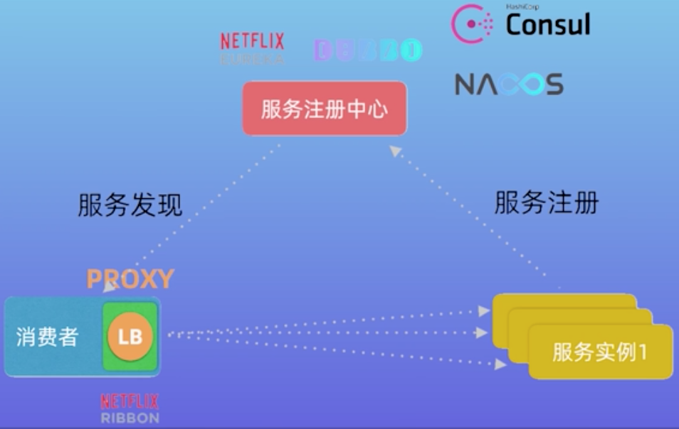
缺点：
- 客户端依赖语言栈，不同的语言需要开发不同的客户端，在微服务下可能出现的多语言问题，显然开发成本太高。
- 另外嵌入式代理也给客户端增加了复杂性
第三代：主机独立进程方案。
随着容器和云原生技术的兴起，业界开始探索第三代的解决方案。
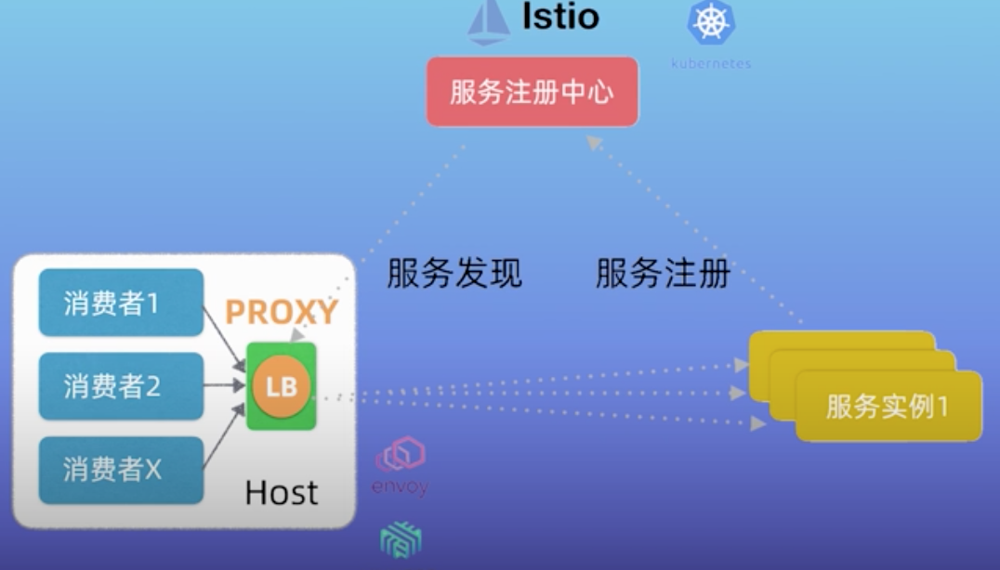
主机独立进程方案是上面两种方案的折中，代理既不集中部署，也不嵌入在客户的应用程序当中，而是作为独立的进程部署在每个主机上，这个主机可以是物理的或者虚拟的。一个主机上的多个消费者可以共享这个代理，实现服务发现和负载均衡。
第三代结构和第二代是类似的，也需要引入服务注册中心进行配合，三代之间只不过代理的位置发生了变化。
这个方案目前有个更时髦的称谓叫ServiceMesh。
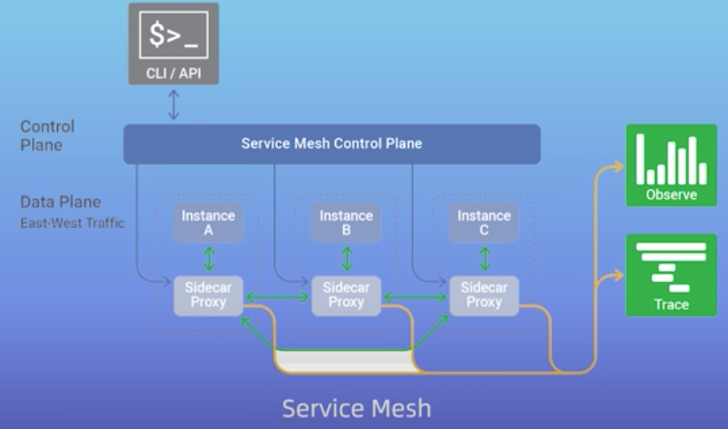
开源产品：Envoy，Linkerd，Istio对应到服务注册中心，当然K8S也内置支持服务发现机制，也是属于第三代的主机独立进程方案。
K8S服务发现机制
考虑到K8S在业界比较火，而且内部服务发现机制比较复杂，这里独立出来就进行剖析。
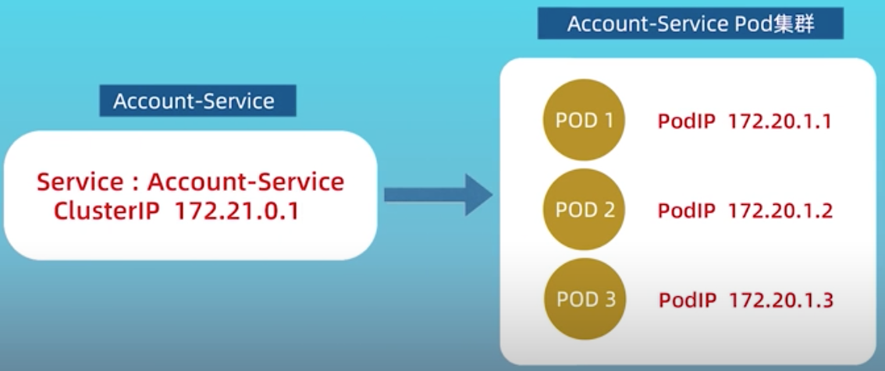
如上图所示，在K8S中一个服务是由一组Pod构成的服务集群。
- Pod是K8S当中最基本的调度单位，它相当于K8S集群当中虚拟机的概念。
- 每个Pod都有一个PodIP，并且相互之间是通过PodIP相互访问，但是服务的PodIP在K8S当中是不固定的，可能会变(包括预期和非预期)。
- 为了屏蔽这种变化，K8S引入了服务Service这个概念，一方面实现服务发现和负载均衡，另一方面屏蔽PodIP可能的变更。
- 在服务发布的时候，K8S会为每个服务分配一个虚拟的ClusterIP
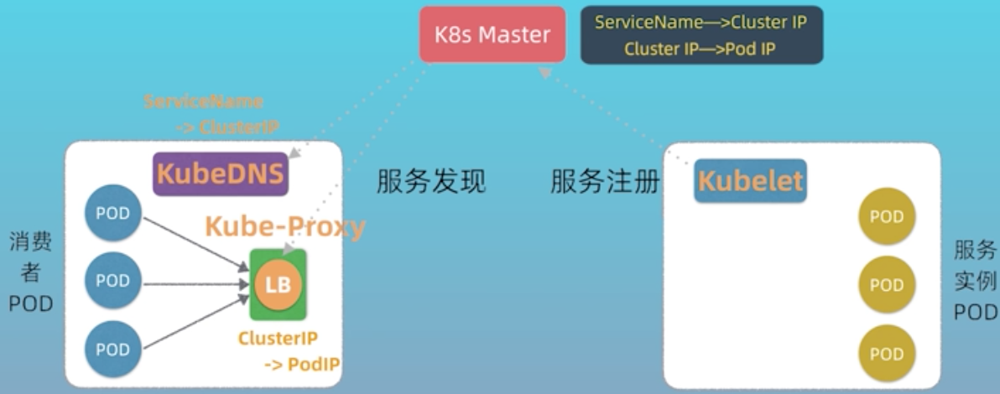
在K8S的worker节点上，有kubelet和kube-proxy，其中后者是实现服务发现的关键，上面是简化的服务发现流程。
服务注册阶段：
- 其中kubelet负责启动Pod服务实例--->
- 启动完成后kubelet会把Pod的IP列表注册到Master节点上-->
- 最后通过服务Service的发布，K8S会为服务分配相应的ClusterIP，相关信息也会记录在Master上。
服务发现阶段：
- kube-proxy会发现clusterIP和podIP列表之间的映射关系，并且修改本地iptables的转发规则，进行负载均衡和转发到对应的PodIP
- 当有消费者Pod要访问某个目标服务实例Pod的时候，通过ClusterIP发起调用，这个ClusterIP会被本地的Iptables机制截获，然后进行负载均衡，转发到指定的Pod实例。
- 实际消费这Pod也是通过服务名进行访问ClusterIP，因为ClusterIP本身也会变，为了屏蔽变化，K8S还引入了kubeDNS这个概念，它通过master可以发现服务名和ClusterIP之间的映射关系。这样消费者Pod通过kubeDNS间接的发现服务的ClusterIP。
比较总结和选型
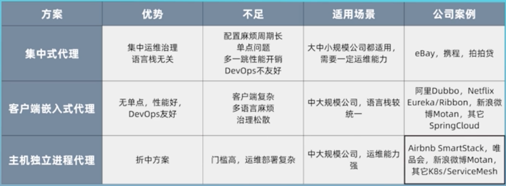
三种方案各有利弊，没有绝对的好坏。他们都有大规模的成功落地的案例。架构师需要在理解这些方案优劣的基础上，根据企业的实际上下文，综合考量，做出技术选型。